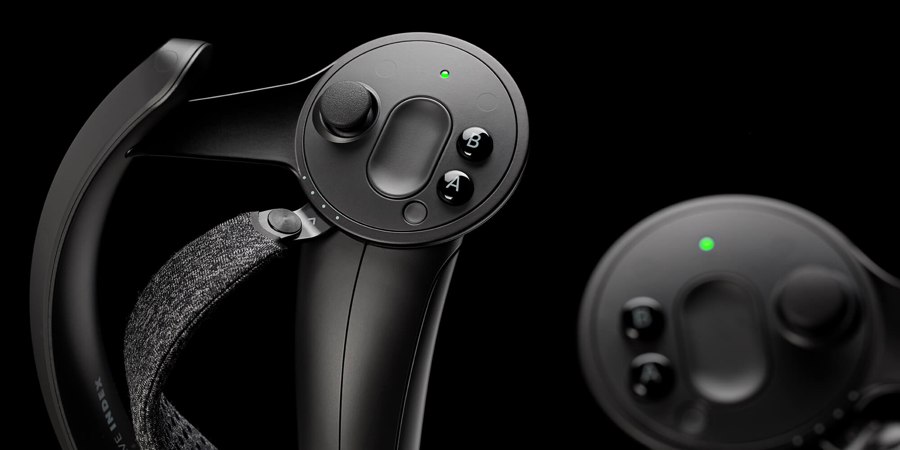
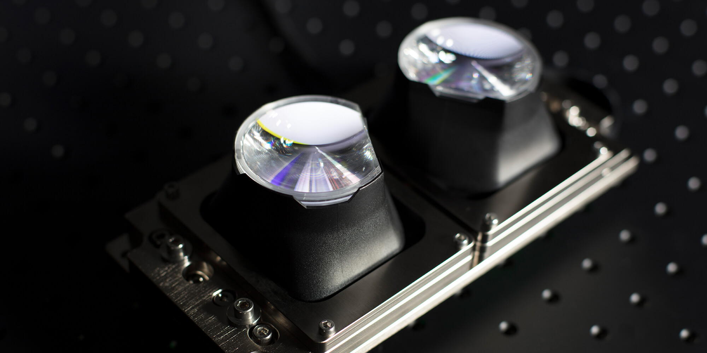
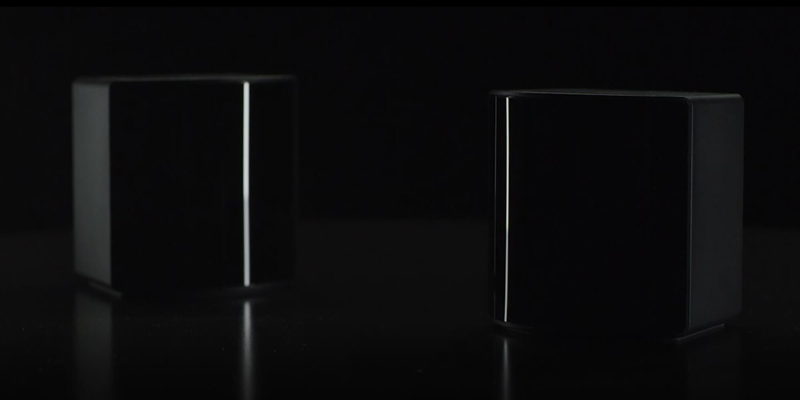

Cutting Edge Controllers
The Valve Index comes with a pair of top of the line handheld controllers. These controllers have amazing grip sensitivity and feel very comfortable in your hands, making for an immersive experience.
Top Of The Line Visuals
Enhanced visuals and optics, open-ear audio, and customizable comfort.
Tracking System
With superior displays and optics, off-ear audio, and adjustable comfort, the Valve Index is considered to be the best way to experience Virtual Reality.
Purchase Today
Start your journey today with the Valve index.
Purchase